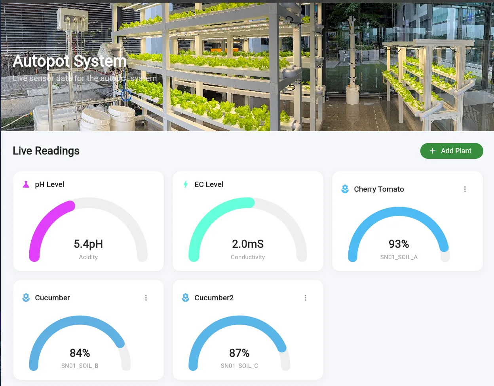
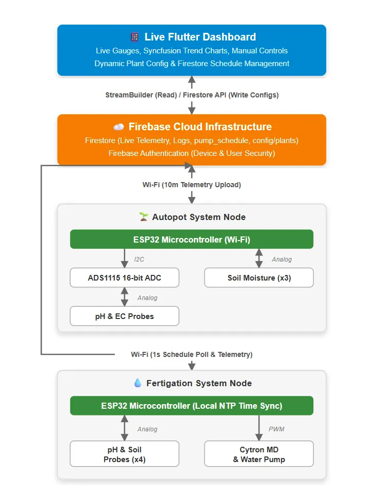
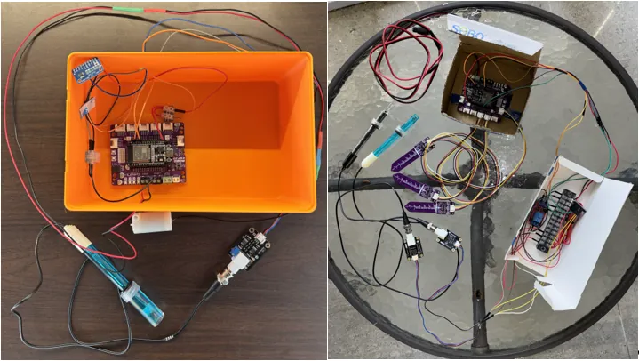
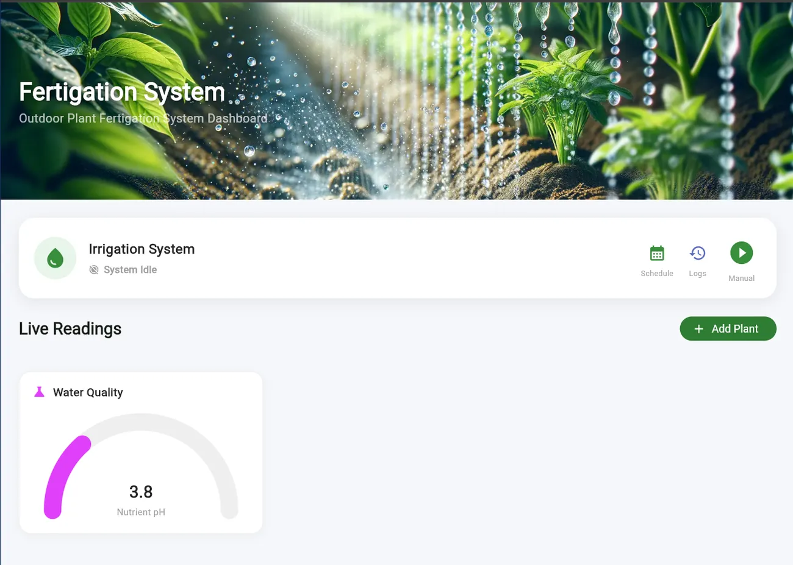
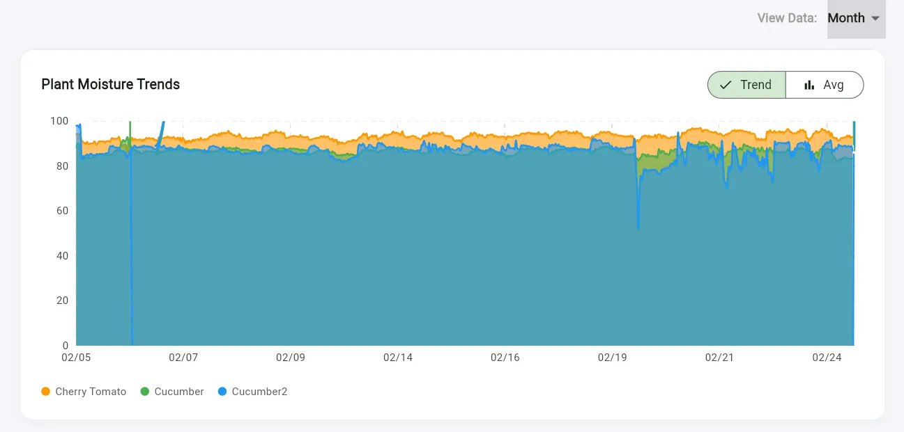
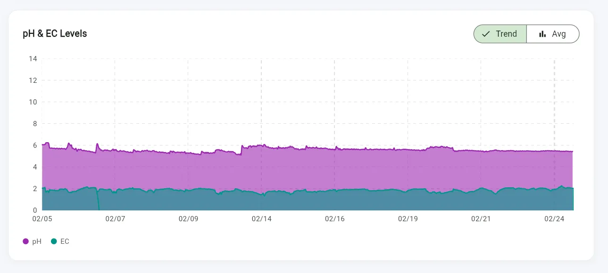
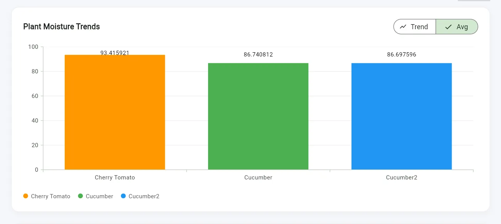
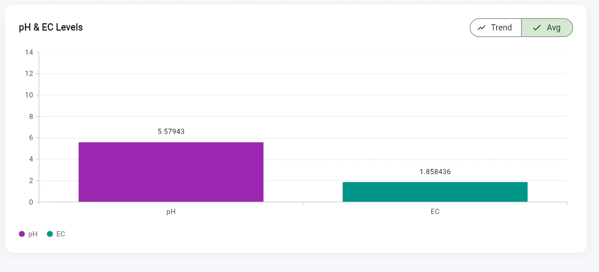

Autopot & Fertigation IoT
A two-node IoT system that monitors pH, EC and soil moisture and runs fertigation pumps on schedule, with a Flutter app for live readings, trends and manual control.

Overview
The hub's plants were checked and fed by hand. I designed a layered system that splits sensing, cloud data and the user interface so each part can fail without taking the others down.
The Autopot node reads pH and EC through a 16-bit ADS1115 ADC and three capacitive soil-moisture probes. I chose capacitive probes because resistive ones corrode in damp soil. The Fertigation node runs pump schedules on the ESP32 itself, synced by NTP, so watering still happens if the Wi-Fi or the app goes down.
Submerged pH and EC probes interfered with each other through the water. I fixed this by multiplexing them in hardware so only one probe is powered at a time.
What I did
- 01Designed the dual-node architecture and wiring (ESP32 + ADS1115, relays and pumps).
- 02Wrote firmware with calibrated, clamped readings and edge-executed schedules synced by NTP.
- 03Built the Firestore data model with 10-minute history uploads for trend charts.
- 04Built the cross-platform Flutter app: live gauges, plant profiles, trends, and scheduled or manual pump control.
- 05Ran a continuous 30-day trial at the hub and wrote it up as lead author: “IoT Design for Automated Plant Monitoring and Fertigation Management”.
Signal path
- pH / EC / moisture probes
- ADS1115
- ESP32 nodes
- Firestore
- Flutter app
- Pumps
Gallery · 7 images
A closer look






